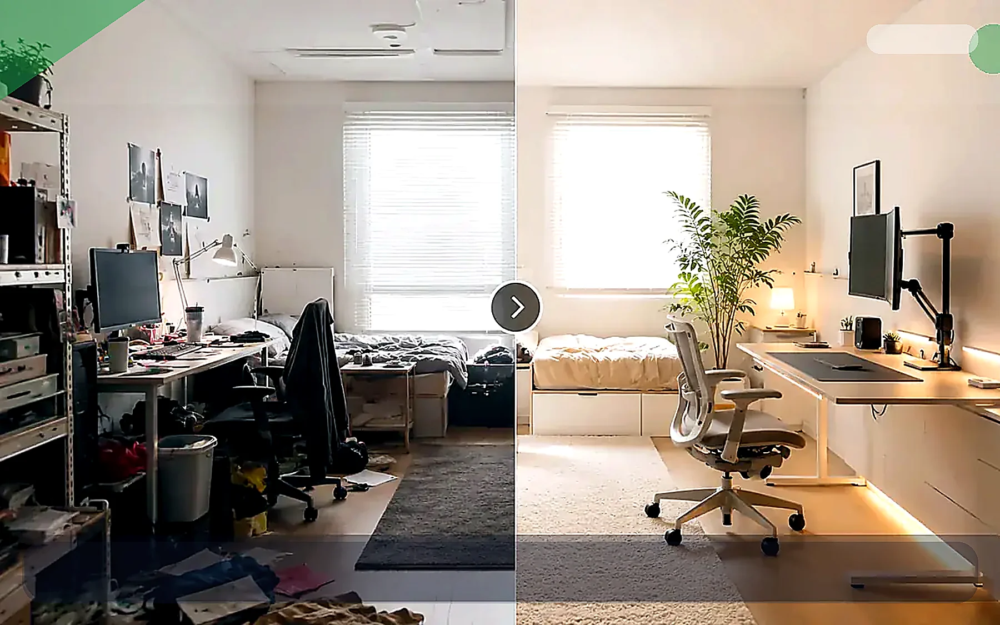

책상 위 물건을 줄이는 7일 정리 루틴

TrendFlow Guide작은 책상은 넓혀 쓰는 것보다 덜 올리는 것이 먼저입니다. 이 글은 하루에 한 가지씩만 줄이는 7일 정리 루틴으로, 책상 위 시야를 빠르게 단순화하는 방법을 정리합니다.
이 글은 단순 추천이 아니라, 왜 이 주제가 요즘 관심을 받는지와 실제 사용 관점에서 무엇을 먼저 바꾸면 좋은지 정리한 글입니다.
이런 상황이라면 이렇게 시작하세요
책상과 방이 좁은 것보다 눈에 들어오는 물건과 케이블이 많아서 더 답답하게 느껴질 수 있어요.
큰 가구를 바꾸기보다 책상 위에 항상 올라와 있는 물건부터 줄이는 편이 체감이 빠릅니다.
케이블, 종이류, 자주 쓰지 않는 물건을 먼저 치우고 물건의 고정 위치를 정하세요.
지금 책상 위에서 오늘 쓰지 않을 물건 3개만 먼저 빼보세요.
- 지금 가장 불편한 문제와 직접 연결되는지 확인
- 매일 반복해서 사용할 가능성이 높은지 확인
- 이미 가진 것과 조합해서 바로 실행 가능한지 확인
왜 지금 이 주제가 뜨는가
- 재택·부업·콘텐츠 작업이 늘면서 작은 책상 활용법에 대한 관심이 높습니다.
- 미니멀리즘이 단순 미감이 아니라 집중력 회복과 연결되며 실용적 관심사가 되었습니다.
- 원룸과 자취방 생활에서 책상은 업무·취미·식사까지 겸하는 공간이 되기 쉽습니다.
실사용 관점 리뷰
실사용 관점에서 가장 효과가 큰 변화는 물건을 사는 것이 아니라 “책상에 상주할 물건”을 먼저 정하는 것입니다. 자주 쓰는 것만 남기고, 나머지는 트레이·서랍·수납박스로 이동하면 체감이 큽니다.
하루에 다 치우려 하면 지치기 쉬워서, Day1은 케이블, Day2는 종이류, Day3는 잡동사니처럼 주제별로 나누는 편이 현실적입니다.
비교해서 보면 좋은 포인트
| 구분 | 우선 확인할 점 | 추천 방향 |
|---|---|---|
| 정리 대상 | 모든 물건을 한 번에 보나 | 종류별로 나누어 처리 |
| 보관 방식 | 일단 숨기기만 하나 | 자주 쓰는지 여부로 나누기 |
| 유지 전략 | 정리 후 다시 돌아오나 | 퇴근 전 3분 리셋 루틴 만들기 |
사지 않아도 되는 경우
- 아직 책상 위치 자체가 비효율적인 경우
- 수납 위치 없이 무조건 버리기만 하는 경우
- 정리보다 업무 장비 부족이 더 큰 문제인 경우
쇼츠 연결 아이디어
- 7일 책상 정리 챌린지 형태의 연속 쇼츠
- 정리 전/후 시야 차이를 보여주는 영상
- 책상 위에 남겨야 할 것 5개만 소개하는 영상
관련 글 연결
바로 사기 전에 이 기준부터 확인하세요
추천 대상
책상 위 물건과 전선 때문에 공간이 계속 복잡해 보이는 사람
먼저 볼 항목
케이블 정리함, 수납박스, 책상선반
사지 않아도 되는 경우
버릴 물건을 정하지 않았다면 수납함부터 사지 마세요.
먼저 해볼 것
책상 위에 오늘 쓰지 않는 물건 3개부터 빼보세요.
이 페이지는 제휴 링크를 포함할 수 있으며, 실제 구매 전에는 본인의 공간·예산·사용 빈도를 먼저 확인하는 것을 권장합니다.
지금 해볼 것 선택
바로 구매를 유도하기보다, 내 상황에 맞는 글을 더 읽고 필요한 항목만 비교하는 흐름을 추천합니다.
눈에 보이는 것부터 줄이세요
오늘 쓰지 않을 물건 3개만 치우고, 전선 하나만 숨겨보세요.